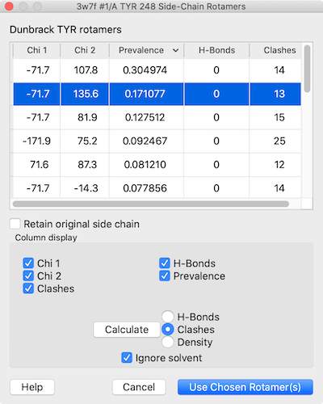

The Rotamers tool allows:
An amino acid can be changed into a different rotamer of the same residue type or “mutated” into a different type. The related command swapaa chooses and incorporates a rotamer automatically.
Although sidechains at multiple positions can be replaced simultaneously, the Rotamers tool is not recommended for predicting the conformations of multiple sidechains in an interacting cluster. Programs such as SCWRL are more appropriate for that purpose. See also: Modeller Comparative, Model Loops, AlphaFold, H-Bonds, Clashes/Contacts, Build Structure, Altloc Explorer, Check Waters, torsion
The Rotamers tool can be opened can be opened from the Structure Editing section of the Tools menu and manipulated like other panels (more...). It can also be started by doubleclick-selecting part of an amino acid and choosing Mutate Residue from the resulting selection context menu. The state of Rotamers is included in saved sessions.
One or more amino acid residues should be selected to indicate where rotamers should be placed. Partially selected residues are considered selected, and if more than one residue is selected, a rotamer set (of the same residue type) will be placed at each.
A smoothed backbone-dependent rotamer library for proteins derived from adaptive kernel density estimates and regressions. Shapovalov MV, Dunbrack RL Jr. Structure. 2011 Jun 8;19(6):844-58.
The Dynameomics rotamer library: amino acid side chain conformations and dynamics from comprehensive molecular dynamics simulations in water. Scouras AD, Daggett V. Protein Sci. 2011 Feb;20(2):341-52.
The penultimate rotamer library. Lovell SC, Word JM, Richardson JS, Richardson DC. Proteins. 2000 Aug 15;40(3):389-408.
In the Dunbrack rotamer library, the following are available:
In the Dynameomics rotamer library, the following are available:
Close dismisses the Rotamers dialog, while Help opens this page in the Help Viewer.
When Apply (or OK, which also dismisses the dialog) is clicked, phi and psi angles at each selected position are measured and reported in the Log. If a type without a rotamer set (namely GLY or ALA) has been specified, the residue(s) will simply be changed to the new type, and the change cannot be undone. Otherwise, for each selected position, the specified rotamer set will be displayed and a rotamer list will appear. Bond lengths and angles are taken from the Amber parameter files all*94.lib, and hydrogens are not included. The rotamers are placed by superimposing backbone atoms of an idealized template with those of the existing residue.
|  |
Each rotamer list includes columns with the sidechain torsion (Chi N) and Prevalence values. The values in the Prevalence column are simply taken from the rotamer library and are not affected by the specific structural environment, except by phi and psi (backbone) angles when the Dunbrack library is used; thus, it is important to consider other factors when choosing a rotamer to incorporate into the structure.
The Column display section below the list contains checkboxes for showing/hiding the existing columns, and allows adding columns for H-bonds, clashes, and agreement with a density map.
Rotamers are initially listed in order of decreasing prevalence, but the listing can be sorted by the values in any column by clicking the header. Clicking the header once sorts the entries in order of increasing value and places an up arrowhead in the header. Clicking again sorts the entries in decreasing order and places a down arrowhead in the header.
One or more rotamers can be chosen from the list by clicking and dragging with the left mouse button; Ctrl-click (or command-click if using a Mac) toggles whether a rotamer is chosen. Only the chosen rotamers are displayed. If the rotamers are for the same residue type as the current residue, there is an option to Retain original side chain, i.e. to keep the original sidechain conformation when incorporating the chosen rotamer(s).
Clicking Use Chosen Rotamer(s) incorporates the chosen rotamer(s) and dismisses the list. When there will be multiple sidechains at a given residue position, the new sidechain(s) will be assigned different alternative location identifiers. After a sidechain has been replaced, it cannot be recovered except by reopening the structure. The display style of the former sidechain will be used. Other characteristics, however, will not be transferred and may need to be regenerated (for example, with addh or select). Cancel dismisses the list and deletes the set of rotamers without modifying the structure.
In the rotamer list dialog, clicking the Calculate button opens a dialog for the specified calculation, which will add or update the corresponding column:
For H-Bonds and Clashes, another option is shown:
Several of the calculation dialog settings are remembered as preferences when the calculation is run. Clicking Reset restores the dialog to factory default settings.
{kind=link}